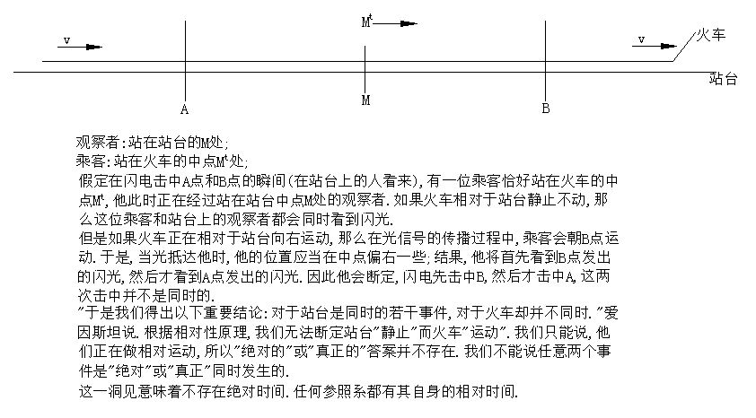

狭义相对论基础
- 狭义相对论的两个基本原理：相对性和光速不变；
- 伽利略相对性原理：在两个相互做匀速直线运动的参照系中，力学定律是相同的；爱因斯坦把伽利略的相对性原理推广为：在两个相互作匀速直线运动的参照系中，一切自然定律都是相同的。这样，不单力学实验，连光学实验，任何实验都不能测出绝对运动，因此也就否定了绝对运动、绝对空间和以太的存在。
- 光速不变原理：光在真空中的传播速度是一个不变的常数，它和光源的运动速度没有关系，和观察者的运动速度也没有关系（这里讲的都是匀速直线运动）。
- 光的运动不服从速度合成定理。
- 以太，绝对惯性系，实验证明不存在；洛仑兹变换是同一事件在不同惯性系中两组时空坐标之间的变换方程；相对论将时间和空间，及它们与物质的运动不可分割地联系起来了。洛仑兹变换与伽利略变换本质不同，但是在低速和宏观世界范围内洛仑兹变换可以还原为伽利略变换。时间和空间的测量互不分离，称为时空坐标；
- 狭义相对论时空观认为：
时间、空间、运动三者是不可分割地联系着；时间、空间的度量是相对的。不同的惯性系没有共同的同时性，没有相同的时间、空间度量。狭义相对论时空观反映在洛仑兹变换之中。
（1）相对于观测者运动的惯性系沿运动方向的长度对观测者来说收缩了。
（2）相对于观测者运动的惯性系的时钟系统对观测者来说变慢了。
（3）长度收缩和时间膨胀效应是时间和空间的基本属性之一，
与具体的物质属性或物理过程的机理无关。
（4）没有“绝对”的时间、“绝对”的空间。
长度收缩和时间的膨胀是相对的。
3、当速度远远小于 c 时，两个惯性系结果相同.
- 时间和长度等的测量:在牛顿力学中，与参考系无关;在狭义相对论力学中，与参考系有关;
- 同时性的相对性是光速不变原理的直接结果。同时性的相对性否定了各个惯性系具有统一时间的可能性，否定了牛顿的绝对时空观。
- 相对论第一次通过四维空间简单地揭示了事物的内部结构，时间做为一个想像中的坐标；
- 在狭义相对论的建立过程中，不是以前的提到的思想，而是后来的法拉第电磁感应思想起到了非常重要的作用：磁铁与线圈的相对运动产生感应电流。
- “对我来说，很难让人接受这是两种完全不同情况的说法，我坚信两者之间的不同只是观察者所选择的角度不同而已。如果从磁铁角度看，当然没有电场存在了，但是从电线圈角度来看，电场显示存在。根据所采用的坐标系的运动状况，电场的存在只是相对的。只有把电场和磁场结合起来，而不考虑者或坐标系统的运动状态，这才是确定的客观存在，这种电磁感应使我想出了相对论原理。”
- “从力学角度来讲，所有的惯性系统是等同的。根据经验，这种等同性也应该对光学和电磁学适用。但是在电磁学理论中，这种等同性似乎并不存在。在早期，我认为这是由于理论系统的不完善造成的。找到并去除这种不完善的想法使我心理很紧张，经过了七年的探索，我终于通过修改时空概念，找到了解决方法。”
- 光速不变原理似乎与相对性原理（朝着光源运动或远离光源运动）不相容；爱因斯坦坚持相对性的原理，接着，他带着一丝不安，也将光速与光源的运动无关接受为一条基本假设。随之而来的便是这样一种显然的困境，他为此而大伤脑筋：一个朝着光源运动的观察者测得的光速竟然与他远离光源时测得的光速一样，而且也与站台上静止不动的者测得的光速一样；“考虑到这个困难，我们的出路似乎只能是：或者放弃相对性原理，或者放弃简单的光的传播定律。”“我打算放弃了。”是什么启发了他了？“对时间概念的分析是解决问题的关键，时间无法绝对地定义，时间与信号速度之间存在着不可分割的关系。”更确切地说，关键在于认识到，在一个观察者看来似乎是同时的两个事件
- 观察者:站在站台的M处;
乘客:站在火车的中点Mt处;
- 假定在闪电击中A点和B点的瞬间(在站台上的人看来),有一位乘客恰好站在火车的中点Mt/,他此时正在经过站在站台中点M处的观察者.如果火车相对于站台静止不动,那么这位乘客和站台上的观察者都会同时看到闪光.
- 但是如果火车正在相对于站台向右运动,那么在光信号的传播过程中,乘客会朝B点运动.于是,当光抵达他时,他的位置应当在中点偏右一些;结果,他将首先看到B点发出的闪光,然后才看到A点发出的闪光.因此他会断定,闪电先击中B,然后才击中A,这两次击中并不是同时的.
- "于是我们得出以下重要结论:对于站台是同时的若干事件,对于火车却并不同时."爱因斯坦说.根据相对性原理,我们无法断定站台"静止"而火车"运动".我们只能说,他们正在做相对运动,所以"绝对的"或"真正的"答案并不存在.我们不能说任意两个事件是"绝对"或"真正"同时发生的.
- 这一洞见意味着不存在绝对时间.任何参照系都有其自身的相对时间.

- 在1905年的论文中，爱因斯坦展示了一幅生动的画面。我们可以想像他看到驶入伯尔尼车站的火车经过了一排排钟表，它们已经与著名的伯尔尼钟塔上的钟表校准。“我们有关对时间的判断总是对同时事件的判断，”他写道，“例如，我说‘火车七点钏到达这里’，我的意思大概是：‘我的表针对火车到达的同时指向7.’”然而，对于这两个远距离事件是否同时发生，彼此做相对运动的观察者将再次持不同的看法。
- 时间延缓：想象一束光从桅杆顶部射向甲板。在船上的观察者看来，光束运动的距离精确等于桅杆长度。但是陆地上的观察者却认为，光束运动的距离是桅杆长度与船在这段时间（即光从桅杆顶端运动到桅杆底部的时间）内向前走过的距离（这是一条 快船）的叠加。在两个观察者看来，光速都是一样的。陆地上的观察者发现，光在到达甲板之前又向前运动了。换句话说，同样的事件（从桅杆顶部发出的光束抵达甲板）从陆地上看要比从船上看花费更多的时间。
- 相对论的意思是说，对时间（包括延续和同时性）的测量是相对的，它取决于观察者的运动，因此对空间（比如距离和长度）的测量也是相对的。然而，两者之间有一种联合，即所谓的“空－时”，却在任何惯性系中都保持不变。类似地，像光速这样的东西也保持不变。
- 没有必要假设以太的存在，没有所谓的绝对静止，空间和时间都是相对的，都要基于观察者的运动。庞加莱从未将同时的相对性与时间的相对性关联起来。
∧